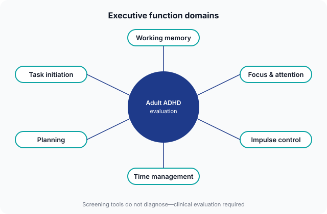
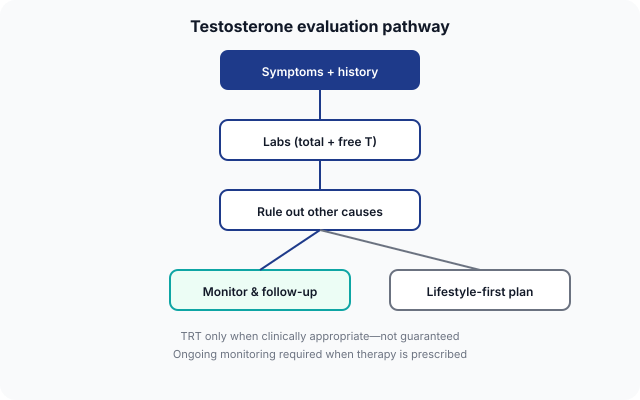
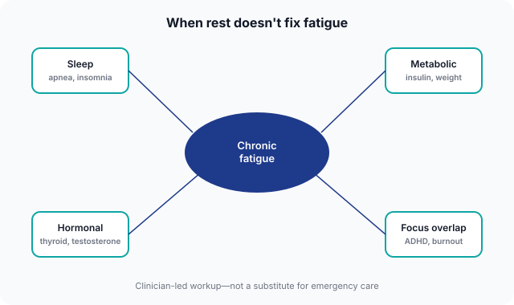
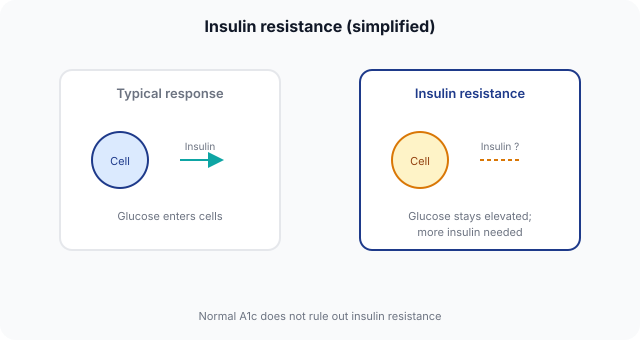
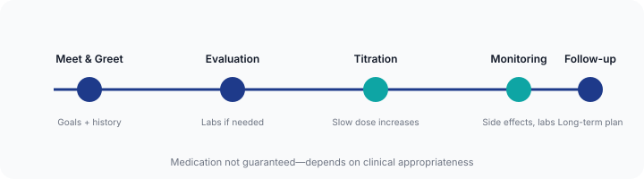

Siya Health Visual Component Library
Reusable diagrams for Health Guides, service pages, and blog articles. Use .siya-diagram wrapper classes from styles.css.
Usage pattern
<figure class="siya-diagram siya-diagram--inline">
<img src="assets/diagrams/food-noise.svg" width="640" height="360"
alt="[Descriptive alt text for accessibility]" loading="lazy" />
<figcaption>Short clinical context—not a self-diagnosis tool.</figcaption>
</figure>
1. Symptom Loop Diagram
Use on: Homepage, fatigue guides, telehealth hub

2. Food Noise Diagram
Use on: /answers/what-is-food-noise, weight-loss blog posts, GLP-1 guides

3. ADHD Executive Function Map
Use on: /adhd-care, /answers/signs-of-adult-adhd, ADHD blogs

4. Testosterone Evaluation Flowchart
Use on: /mens-health-longevity, TRT answer pages

5. Fatigue Root Cause Map
Use on: /answers/why-am-i-tired-even-after-sleeping, fatigue blog

6. Insulin Resistance Visual
Use on: /answers/what-is-insulin-resistance, weight-loss hub

7. GLP-1 Patient Journey
Use on: /weight-loss-metabolic-health, GLP-1 blog posts

8. Weight Loss Plateau Explainer
Use on: plateau answer pages, GLP-1 side-effect guides

See docs/VISUAL-CONTENT-ARCHITECTURE-AUDIT.md for placement map across all page types.